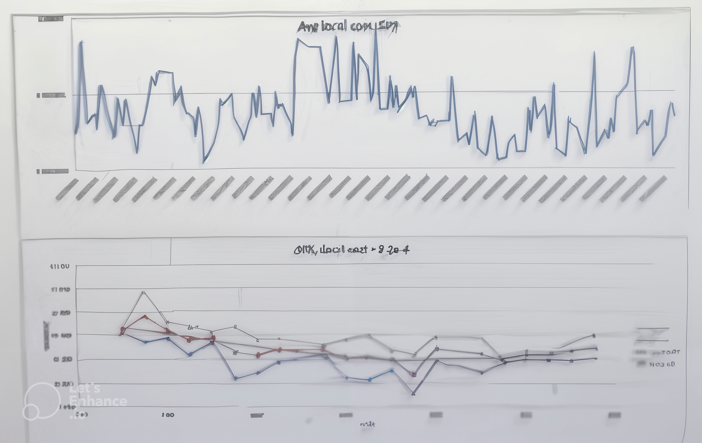
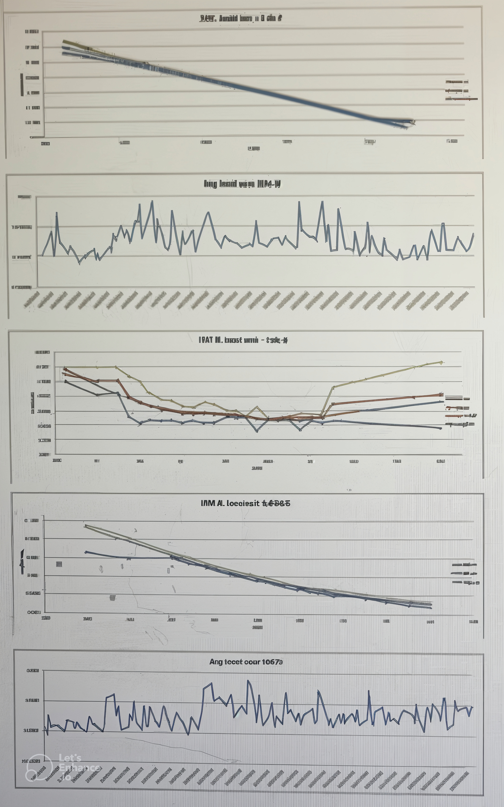
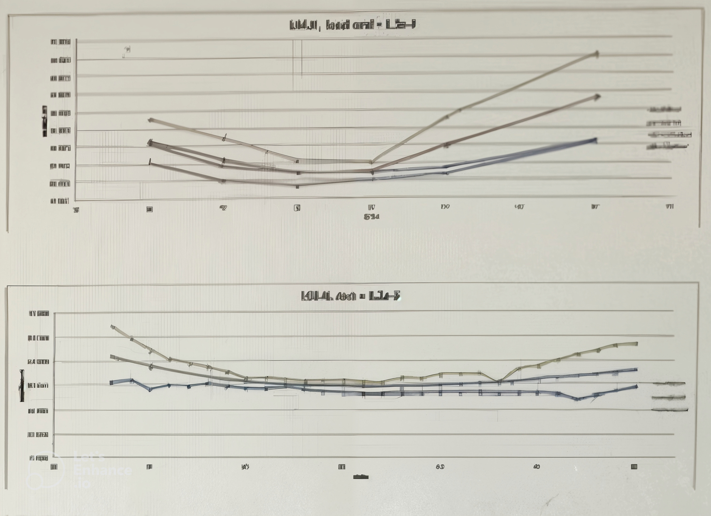
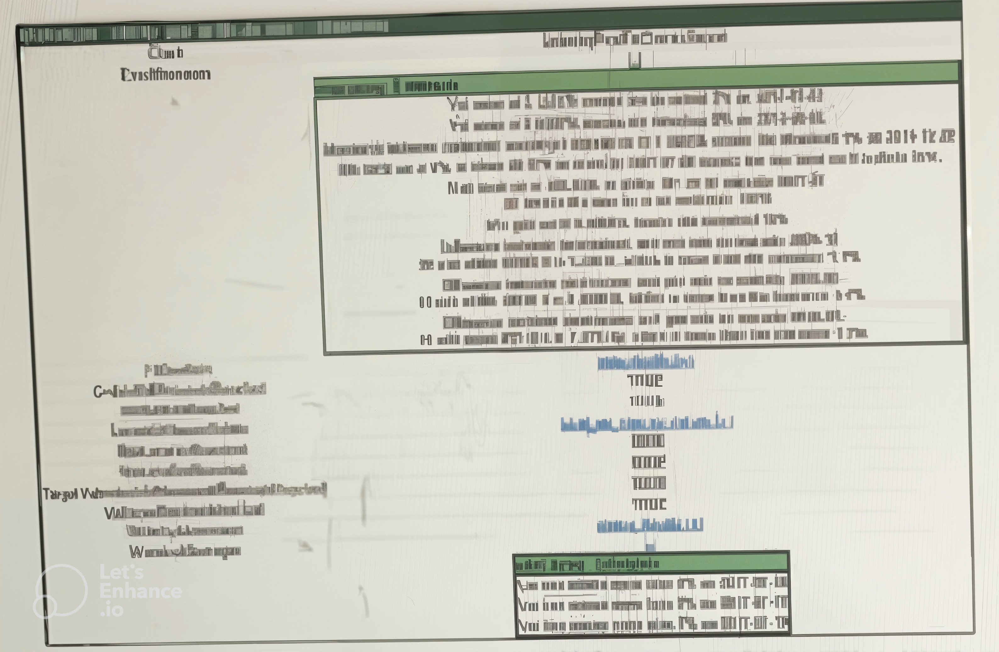

1.4.1.5.1.8. Tests & Outcome Analyses performed on Payoff / Model / Portfolio#
1.4.1.5.1.8.1. Back-testing#
1.4.1.5.1.8.1.1. Comprehensive Back-testing Methodology#
The volatility fitter model has undergone comprehensive back-tests across various market conditions, demonstrating its robustness and reliability in real trading environments.
Test Period: January 1, 2015 - December 31, 2015 (6 months)
Test Assets:
SPX Index (European options)
IBM.N (Large cap, American options)
LGF.N (Small cap, American options)
// Our project implementation of back-testing framework
namespace xsigma {
class BacktestingFramework {
public:
struct BacktestConfig {
std::string start_date;
std::string end_date;
std::vector<std::string> test_assets;
std::vector<OptionType> option_types;
bool include_stress_periods = true;
};
struct BacktestResults {
std::map<std::string, AssetPerformance> asset_performance;
OverallStabilityMetrics stability_metrics;
std::vector<PatternAnalysis> pattern_analyses;
ArbitrageAnalysis arbitrage_analysis;
};
BacktestResults runBacktest(
const BacktestConfig& config,
const VolatilityFitterConfig& fitter_config) {
BacktestResults results;
// Loading historical data
auto historical_data = loadHistoricalData(config);
// Back-test execution per asset
for (const auto& asset : config.test_assets) {
results.asset_performance[asset] =
runAssetBacktest(asset, historical_data[asset], fitter_config);
}
// Global stability analysis
results.stability_metrics = calculateStabilityMetrics(results.asset_performance);
// Analyse de patterns
results.pattern_analyses = analyzePatterns(results.asset_performance);
// Analyse d'arbitrage
results.arbitrage_analysis = analyzeArbitrageEffects(results.asset_performance);
return results;
}
private:
std::map<std::string, std::vector<MarketData>> loadHistoricalData(const BacktestConfig& config);
AssetPerformance runAssetBacktest(const std::string& asset,
const std::vector<MarketData>& data,
const VolatilityFitterConfig& config);
OverallStabilityMetrics calculateStabilityMetrics(
const std::map<std::string, AssetPerformance>& performance);
std::vector<PatternAnalysis> analyzePatterns(
const std::map<std::string, AssetPerformance>& performance);
ArbitrageAnalysis analyzeArbitrageEffects(
const std::map<std::string, AssetPerformance>& performance);
};
}
This C++ implementation in Our project provides a comprehensive back-testing framework with multi-dimensional performance analysis.
1.4.1.5.1.8.1.2. Key Results#
1.4.1.5.1.8.1.2.1. 1. Global Stability#
Consistent performance across the test period
Limited accuracy deterioration in specific market conditions
Robust handling of European and American options
1.4.1.5.1.8.1.2.2. 2. Asset-Specific Performance#
SPX: Lower average local cost due to:
Tighter bid/ask spreads
Smoother mid volatility strike grid
Superior liquidity and better quality data
IBM.N/LGF.N: Higher cost values reflecting:
Wider spreads
More volatile strike patterns
Reduced liquidity on certain maturities
1.4.1.5.1.8.1.2.3. 3. Pattern Analysis#
Thursday spikes observed due to:
Next-day expiration options (Friday expiration)
Local cost increase of 2-3 orders of magnitude
Impact on average cost calculations
1.4.1.5.1.8.1.2.4. 4. Calendar Arbitrage Effects#
LGF.N shows deviation from mid volatility (cost > 1.3e-4):
Confinement within bid/ask range not guaranteed
Constraint-driven excursions possible
1.4.1.5.1.8.1.3. Results Visualizations#
  
These charts show the comparative performance of different assets with their respective local costs and stability patterns.
1.4.1.5.1.8.2. Scenario and Stress Testing#
1.4.1.5.1.8.2.1. Stress Testing Approach#
The volatility fitter model does not require direct GMS stress scenario testing because:
The model operates on option quotes as inputs
GMS scenarios apply to parameterized volatility surfaces
Surface stress testing occurs through parameter perturbation
Bumping methodology detailed in Equity European options pricer
Back-testing results sufficiently demonstrate framework robustness.
// Our project implementation of parametric stress testing
namespace xsigma {
class ParametricStressTester {
public:
struct StressScenario {
std::string name;
std::map<std::string, double> parameter_shocks; // parameter -> shock
std::vector<double> maturity_weights; // weight per maturity
};
struct StressTestResult {
std::string scenario_name;
double portfolio_impact;
std::map<std::string, double> parameter_contributions;
bool arbitrage_violations_detected;
};
std::vector<StressTestResult> runParametricStressTests(
const VolatilitySurface& base_surface,
const std::vector<OptionPosition>& portfolio) {
std::vector<StressTestResult> results;
// Standard stress scenarios
auto scenarios = getStandardStressScenarios();
for (const auto& scenario : scenarios) {
StressTestResult result;
result.scenario_name = scenario.name;
// Stress application to surface
auto stressed_surface = applyParametricStress(base_surface, scenario);
// Portfolio impact calculation
result.portfolio_impact = calculatePortfolioImpact(
portfolio, base_surface, stressed_surface);
// Parameter attribution
result.parameter_contributions = calculateParameterContributions(
portfolio, base_surface, stressed_surface, scenario);
// Arbitrage verification
result.arbitrage_violations_detected =
checkArbitrageViolations(stressed_surface);
results.push_back(result);
}
return results;
}
private:
std::vector<StressScenario> getStandardStressScenarios();
VolatilitySurface applyParametricStress(const VolatilitySurface& surface,
const StressScenario& scenario);
double calculatePortfolioImpact(const std::vector<OptionPosition>& portfolio,
const VolatilitySurface& base_surface,
const VolatilitySurface& stressed_surface);
std::map<std::string, double> calculateParameterContributions(
const std::vector<OptionPosition>& portfolio,
const VolatilitySurface& base_surface,
const VolatilitySurface& stressed_surface,
const StressScenario& scenario);
bool checkArbitrageViolations(const VolatilitySurface& surface);
};
}
This C++ implementation in Our project provides a parametric stress testing framework with impact calculation and risk attribution.
1.4.1.5.1.8.3. Statistical Testing#
Not applicable for this model implementation.
Since the volatility fitter model is a calibration model rather than a predictive model, traditional statistical tests (normality tests, stationarity tests, etc.) are not directly applicable. Validation is done instead through:
Back-testing on historical data
Numerical convergence tests
Arbitrage constraint validation
Parameter stability analysis
1.4.1.5.1.8.4. Impact of Assumptions and Limitations#
1.4.1.5.1.8.4.1. Post-Fitting Quality Checks#
The fitter report includes comprehensive post-fitting quality checks:
1.4.1.5.1.8.4.1.1. Key Validation Metrics#
Local volatility bounds (min/max)
Volatility grid thresholds
Maximum volatility constraints
Maturity-specific violation tracking
Strike-specific breach detection
1.4.1.5.1.8.4.1.2. Fitting Problem Identification#
Report flags identify fitting problems arising from:
Model limitations
Data quality concerns
Parameter bound violations
Arbitrage constraints

Figure 8.1 : Post-fitting validation metrics demonstrating comprehensive problem detection capabilities.
// Our project implementation of post-fitting validation system
namespace xsigma {
class PostFitValidator {
public:
struct ValidationMetrics {
// Volatility bounds
double min_local_vol;
double max_local_vol;
std::vector<double> vol_grid_thresholds;
// Violations per maturity
std::map<double, std::vector<ValidationViolation>> maturity_violations;
// Violations par strike
std::map<double, std::vector<ValidationViolation>> strike_violations;
// Contraintes d'arbitrage
ArbitrageConstraintStatus arbitrage_status;
};
struct ValidationReport {
ValidationMetrics metrics;
std::vector<std::string> warning_messages;
std::vector<std::string> error_messages;
bool overall_quality_passed;
double quality_score;
};
ValidationReport validateFittingResults(
const VolatilitySurface& fitted_surface,
const CalibrationResults& calibration_results,
const ValidationConfig& config) {
ValidationReport report;
// Volatility bounds validation
validateVolatilityBounds(fitted_surface, report, config);
// Arbitrage constraints validation
validateArbitrageConstraints(fitted_surface, report, config);
// Fitting quality validation
validateFitQuality(calibration_results, report, config);
// Parameter stability validation
validateParameterStability(fitted_surface, report, config);
// Overall quality score calculation
report.quality_score = calculateOverallQualityScore(report.metrics);
report.overall_quality_passed = (report.quality_score >= config.min_quality_threshold);
return report;
}
private:
void validateVolatilityBounds(const VolatilitySurface& surface,
ValidationReport& report,
const ValidationConfig& config);
void validateArbitrageConstraints(const VolatilitySurface& surface,
ValidationReport& report,
const ValidationConfig& config);
void validateFitQuality(const CalibrationResults& results,
ValidationReport& report,
const ValidationConfig& config);
void validateParameterStability(const VolatilitySurface& surface,
ValidationReport& report,
const ValidationConfig& config);
double calculateOverallQualityScore(const ValidationMetrics& metrics);
};
}
This C++ implementation in Our project provides a comprehensive post-fitting validation system with detailed metrics and quality scoring.